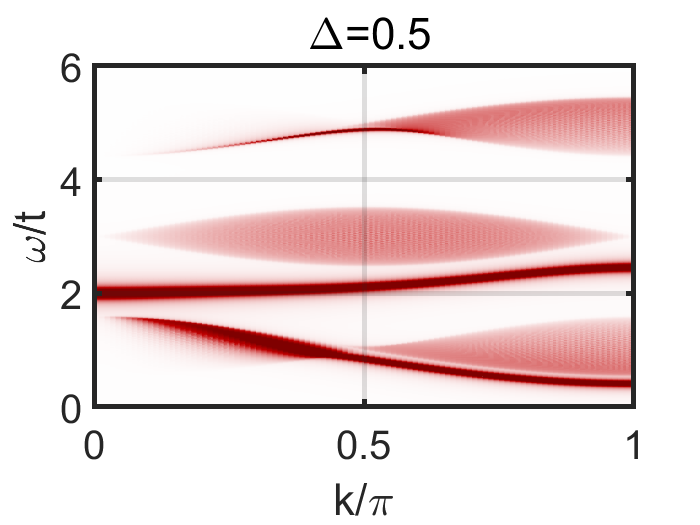

Spin fractionalization in a Kondo lattice superconductor heterostructure
E. Huecker and Y. Komijani, Spin fractionalization in a Kondo lattice superconductor heterostructure, Phys. Rev. B, 108, 195120 (2023).

- Kondo lattices are one of the classic models of strongly correlated systems where despite a long history, a full understanding of the excitation spectra is still not available.
- Here we propose that recent progress in engineering heterostructures can be leveraged to gain insight into and even tune this spectra. We use a strong Kondo coupling expansion to study spin-1 excitations of a Kondo lattice in both one and two dimensions to see whether paramagnons in a Kondo insulator fractionalize into spin-1/2 excitations.
- We show that while paramagnons are stable in the strong Kondo coupling limit, the presence of sufficient proximity-induced superconducting pairing can favor fractionalization. Our results can be checked using a neutron scattering study of Kondo-lattice heterostructures, and they can pave the way toward engineering strongly correlated electronic systems.